Taxonomy of Communication Networks
Overview

Broadcast Networks
- definition
-
Nodes share a common channel;information transmitted by a node is received by all other nodes in the network
- examples
Switched Networks
- definition
-
Information is transmitted to a small sub-set(usually only one) of the nodes
Circuit switching
- definition
-
dedicated circuit per call/session
- example
- telephone
- GSM High-Speed Circuit-Switched Data(HSCSD)
- feature
- each link has a number of "circuits"
(sometimes we refer to a "ciruit" as a channel or a line)
- an end-to-end connection reserves one "circuit" at each link
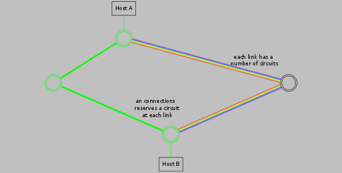
- multiplexing for sharing resources
- TDM(Time-Division Multiplexing)
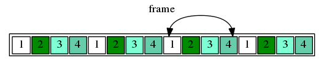
- FDM(Frequency-Division Multiplexing)
- Others,e.g., CDM(Code-Division Multiplexing), color/lambda division
three phases
1. circuit establishment
2. data transfer
3. circuit termination
circuit switch delay

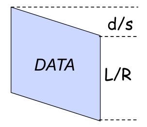
propagation delay
delay for the first bit to go from a source to a destination
- d = length of physical link
- s = propagation speed in propogation speed in medium(~2 * 10^5 km/sec)
- propagation delay = d / s
Suppose the distance between A and B is 4000km,
then one-way propagation delay is:
4000km / (200,000km/s) = 20ms
transmission delay
time to pump data onto link at reserved rate
- R = reserved bandwidth(bps)
- L = message length(bits)
- time to send a packet into link = L / R
Suppose we reserve a one slot HSCSD channel
- each HSCSD frame can transmit about 115kbs
- a frame is divided into 8 slots, each is about 14kbs
Then the transmission delay of using one reserved slot for a message of 1 kbits:
1kbits / 14kbps = 70ms
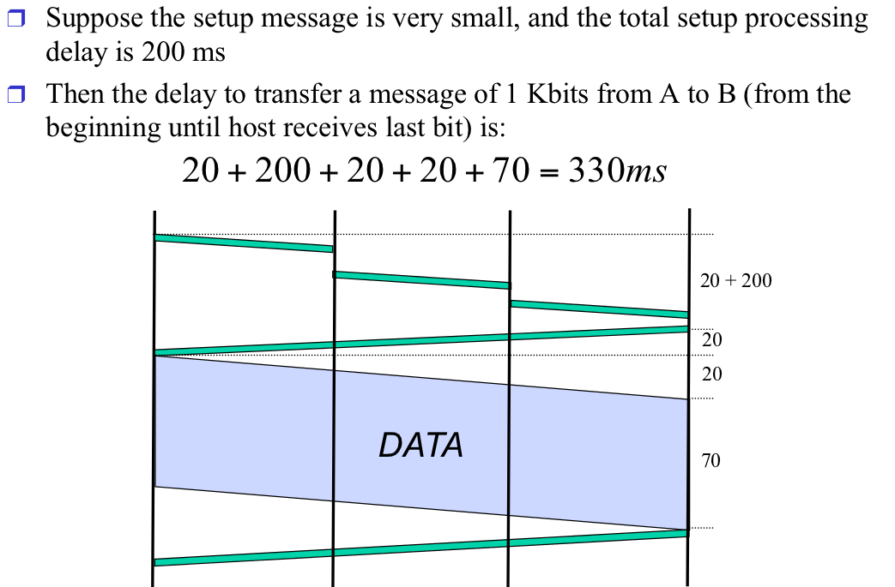
Packet switching
- definition
-
data sent through network in discrete "chunks"
- example
- Internet
- Gneneral Packet Radio Service(GPRS)
- feature
- Each end-to-end data flow (ie., a sender-receiver pair) divided into packets.
packet structure
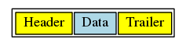
- header and trailer carry control information(eg., destination address, check sum)
- At each node the entire packet is received, processed(e.g.,routing), stored briefly, and then forwarded to the next node; thus packet-switched networks are also callled store-and-forward networks.
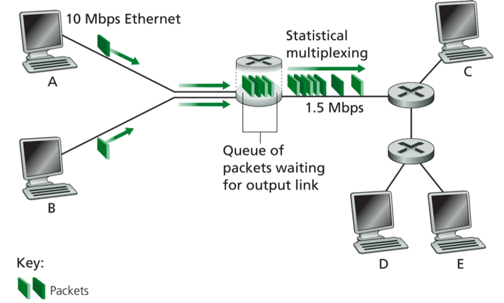
packet switching router
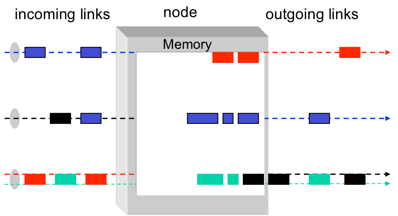
resources
- resources used as needed
- on its turn, a packet used full link bandwidth
Circuit switching vs Packet switching
|
circuit switching |
packet switching |
|
| resource |
partitioned |
not partitioned |
|
| reservation / setup |
need reservation(setup delay) |
no reservation |
|
| resources contention |
busy signal(session loss) |
congestion(long delay and packet losses| |
| service guarantee |
yes |
no |
|
| charing |
time |
packet |
|
| header |
no header |
per packet header |
|
| fast path processing |
fast |
per packet processing |
|
Four types of delay at each hop
Nodal processing delay
check errors & routing
Queueing
time waiting for its turn at output link
Transmission delay
time to pump packet onto a link at link speed
Propagation delay
router to router propagation
The focus is on uqeueing and transmission delay.
Comparasion
Assume:
R = link bandswidth(bps)
L = average packet length(bits)
a = average packet arrival rate(pkt/sec)
R / L = packet service rate(pkt/sec)
Case 1(not reserve) :
Packet arrival rate: λ
Packet service rate: μ


Average queue size:
Average queue delay:
Transmission delay:

Queueing + transmission:
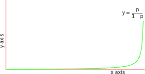
Questions
1. Where is the control information for circuit switching?